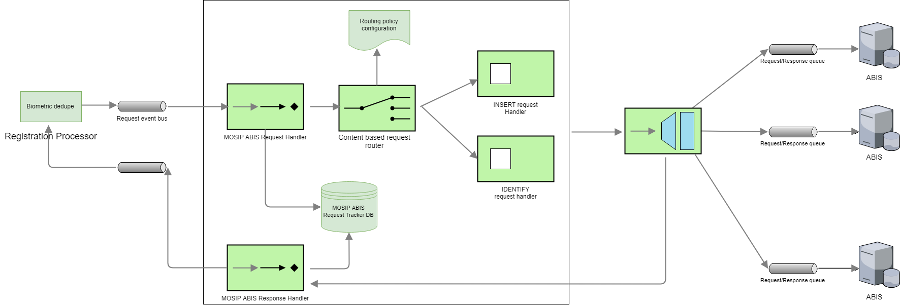

A country may use one or more ABIS's to de-duplicate biometric data. The reason for using multiple ABIS's could be
Use one ABIS for fingerprint and another for Iris
Use multiple ABIS's for the same biometric data and evaluate the best ABIS based on the de-duplication (However, MOSIP ABIS middleware will not have any logic to evaluate the best ABIS)
MOSIP ABIS middleware will have the following components
MOSIP ABIS request handler
Request router (based on routing policy, an ABIS request is routed to the correct ABIS system)
ABIS response handler
ABIS performance evaluator

MOSIP ABIS Middleware API's¶
MOSIP ABIS Middleware will support a MATCH interface. This interface accepts the biometrics data of an individual, inserts the data into 1 or more ABIS's based on the routing policy then issues an identify request to the ABIS's. Response from all the ABIS's is evaluated and a response is sent back to the requesting party.
MATCH (A 1:n match of fingerprint or Iris data)¶
ABIS performance evaluator (TBD in v2 of MOSIP)¶
This component will evaluate the performance of an ABIS over a period of time based on the responses received for MATCH request.